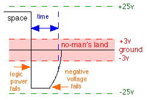

|
|
www.conserver.com |
|
|
www.conserver.com |
Console Server BREAK-Off Test Methodshttp://www.conserver.com/console/BREAK-off/breaktest.html
|
|
Basic Test Topology
The orange line is the serial console connection between the target Sun host (2) and the terminal server we are testing (3). The green lines represent TCP Connections over Ethernet from our conserver host (1);
|
|
In our lab, we have divided the duties a bit, so that the Server performs the Conserver and TFTP duties, while another laptop performs most of the terminal emulation duties.
All of the devices are connected to a common ethernet segment. The Laptop has a serial port (shown as the green lines in the illustration above), which we use to communicate with many of the Devices Under Test (DUT) for their initial configurations. We then connect each DUT in turn, via serial (shown in the illustrations as an orange line) to the target Sun machine, and then perform the various tests, and see if the host is brought to the OK prompt. We started with units that we use today, and could borrow temporarily. Our test subnet usually has between three and six DUTs at any given time, so we can take measurements and perform testing when we have the time. Paper logs are kept, and the results are rolled into a test results database for storage and mining. |
In one case, we shared our test methods with a team at another site (Jeff Komori and Jim Dumont at Synopsys), and asked them to test some hardware that they could not loan us.
I do realize that good science relies on larger sample pools. We are continuing to solicit loaner equipment that we can put through our tested. As we run out of easy access to equipment, we will begin to accept more offers from other teams at universities and other large sites to perform this testing on their own gear using our test methods. We'll review their test results, and add those results to our database as 'external data' submissions, in order to identify which testing we have performed personally.
|
Hardware-related failures The BREAK signal is an inversion of the data lead for a specific period of time, exceeding the period of at least one full character, including the start/stop bits, and any parity. As such, the duration of the BREAK signal is a function of the port speed of the UART sending the data. However, many UARTS will send a BREAK signal that is 4 times as long (some are 16-times as long) as a single character. Some DEC manuals state that the period is actually ~250 milliseconds, and many VT-terminals will send a long BREAK signal. Simple visual observation may be possible with a passive RS-232 signal tracer for most devices (9600 bits-per-second or slower). This can tell us whether the BREAK occurs immediately after Power Off or Power On, or if it occurs later in the boot cycle, during a warm-boot of the device, or a reset of the serial interface, and by invocation from Conserver. (Sun devices are sensitive to short BREAK signals. If your port speed is set to higher than 9600 bps, it can be difficult to see a short BREAK signal. For our testing, we set the port speeds to 9600 whenever possible.) |
|
Other testing includes measuring the actual power output of the RS-232 drivers. While the specification calls for up to +/-25VDC for the low/high logic signals, the "no-man's land" range (where "data is invalid") is down at +/-3V. It is possible for devices to output less power, but then they won't drive a signal as far...and we might care about that when we consider large data center installations. Since some devices use newer I.C.s with charge-pump technology, its possible to see levels closer to +/-6V or +/-9V, and still work OK except in some edge cases with long cable runs. Most devices so far have voltages between +/- 13V to +/- 8V.-  In the illustration to the right, the blue "time" illustrates the duration of time needed to be perceived as a BREAK signal. In this example, the logic power fails, (and the input to the serial driver chip seems to change levels, falling to zero volts) while the power supply continues to supply power to the RS-232 power rails into the serial driver. The result is that the single, solid signal from this power failure appears to look like a BREAK signal in duration before the RS-232 levels also fall to zero volts. If the power rails are to blame, the signal could last longer than a normal BREAK. If this is the case, it is possible that the Sun CPU is "too sensitive" to BREAK. That is, if the signal doesn't return to normal i(return back to the SPACE logic state) after the prescribed time period, the signal should probably be ignored, rather than acted upon. If we had access to a digital oscilloscope, or similar device that could trigger on a signal event and capture the waveforms of the TXD and RXD leads (voltage over time), as well as perhaps the logic power rail voltage, and then export that display to a Polaroid photo, a printer, or an image file on a floppy, we could include the images on our pages and write-ups. |
|
In this hardware-related failure, the power supplies are only part of the problem. The accomplice in this failure are the actual RS-232 driver chips (Typically the 1488/1489 series), which connect to ground, the logic power supply rail, as well as additional power rails for the RS-232 voltage levels. As a result, replacing the power supply may not completely solve the problem (Large capacitors on the circuit board, connected to the RS-232 voltage rails, could keep the voltages high enough, long enough to make the failure appear.) |
Dallas Semiconductor Application Note 083 is a good introduction to *-232 async serial, from the folks that developed the single-power-supply transmitter and receiver chip sets (long live the MAX-232 chips, which simplified many of my interface designs!).
There are a couple other good App Notes on this server about RS-232 topics;
|
NOTICE: Most of the pages, articles, and tutorials on this website are copyrighted works. You may make 'deep links' to various pages. (If you let me know which page(s) you are linking to, I'll let you know if I move the page(s) during updates.) Please send me email if you wish to republish any material, or use it on your own website. |